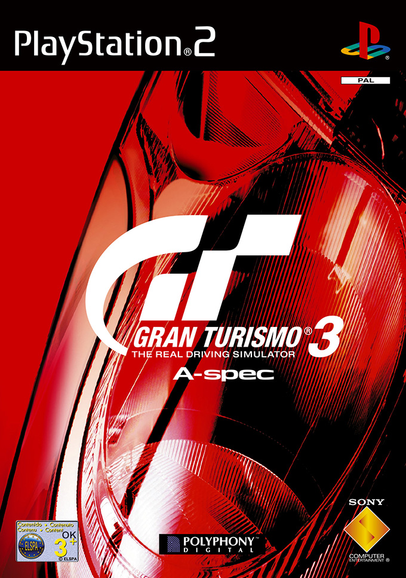

-
GTA San Andreas #01
- FPS
- Ação-Aventura
O jogo se passa no estado ficcional de San Andreas, com a história seguindo Carl "CJ" Johnson em sua luta para lidar com guerras de gangues, confrontos com policiais e as relações com sua família e amigos. O mundo aberto permite que os jogadores naveguem livremente pelas áreas rurais e urbanas de San Andreas.
-
Gran Turismo 3-A spec #02
- Simulador
- Corrida
Gran Turismo 3: A-Spec é baseado fundamentalmente no gênero de jogo de corrida. O jogador deve manobrar um automóvel para competir contra pilotos artificialmente inteligentes em várias pistas de corrida. O jogo usa dois modos diferentes: Arcade e Simulação.
-
Gran Turismo 4 #03
- Simulador
- Corrida
Com carros e circuitos autênticos, além de uma física melhorada para os veículos, Gran Turismo 4 traz uma simulação de corrida ainda mais realista para a série. As características de cada carro levam em conta o peso, a velocidade, o atrito e muito mais para oferecer uma experiência bem realista de direção.
-
GTA Vice City #04
- FPS
- Ação-Aventura
O jogo segue Tommy Vercetti, um mafioso que foi enviado para Vice City para lidar com um negócio fracassado. Logo após o fracasso, Tommy é forçado a fugir da cidade. Mas antes de deixar a cidade, Tommy resolve vingar-se de seus inimigos e tomar o controle de Vice City.
-
Final Fantasy X #05

- JRPG
A história se passa no mundo fantástico de Spira e segue um grupo de aventureiros e sua busca para derrotar um monstro conhecido como Sin. O jogador controla Tidus, um atleta de blitzball que vai para Spira após sua cidade natal Zanarkand ser destruída por Sin.
-
GTA III #06
- FPS
- Ação-Aventura
Ambientado na cidade fictícia de Liberty City, vagamente baseada em Nova Iorque, o jogador controla Claude que, após ter sido deixado para morrer, fica enredado no mundo de gangues, crime e corrupção.
-
MGS 2 - Sons of Liberty #07
- Ação-Aventura
- Stealth
O protagonista é Raiden, ao invés do tradicional Solid Snake, um agente secreto dotado de muitas experiência em táticas de guerrilha, combate armado e desarmado, além do uso de diversos itens de espionagem. A franquia conta sempre com a presença de uma arma nuclear de grande poder de destruição chamada Metal Gear, um problema na vida de Raiden, que deve salvar o mundo da ativação deste artefato bélico.
-
Tekken 5 #08
- Luta
O final do Rei do Punho de Ferro 4 estava chegando. Jin Kazama lutaria com seu próprio pai, Kazuya Mishima, para decidir quem enfrentaria Heihachi Mishima na final do torneio. Porém, Heihachi o sequestrou e o acorrentou em seu Dojo, em Hon-Maru.
-
Final Fantasy XII #09
- JRPG
A história de Final Fantasy XII acontece no mundo de Ivalice, onde as nações estão em conflito. Os dois personagens principais são Vaan, um jovem órfão que sonha em se tornar um pirata, e Ashe, uma princesa em busca de vingança contra o Império de Archadia. O jogo apresenta um sistema de combate em tempo real
-
Kingdom Hearts #10

- RPG
- Ação-Aventura
Sora, Riku e Kairi, três amigos que um dia decidem viajar para conhecer novos mundos, mas um dia antes da viagem, a Destiny Islands é invadida pelos Heartless, seres sem coração criados pelas trevas. Quando Riku é levado pela escuridão e Kairi desaparece na frente do herói, sora vai a procura de seus amigos, encontrando Donald e Pateta a procura do Rei Mickey em Traverse Town.